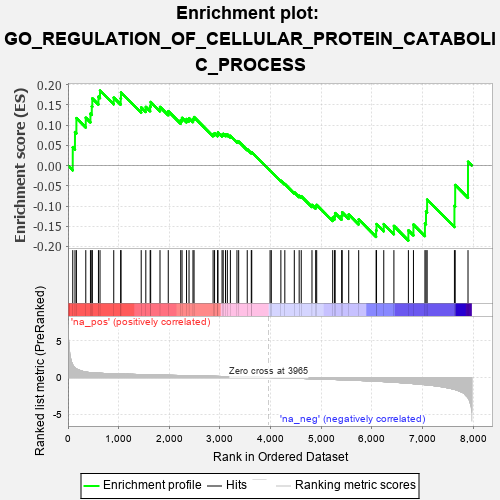
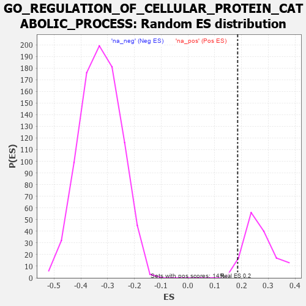

| | | Dataset | 7d |
| Phenotype | NoPhenotypeAvailable |
| Upregulated in class | na_pos |
| GeneSet | GO_REGULATION_OF_CELLULAR_PROTEIN_CATABOLIC_PROCESS |
| Enrichment Score (ES) | 0.18555579 |
| Normalized Enrichment Score (NES) | 0.69569033 |
| Nominal p-value | 0.96503496 |
| FDR q-value | 0.9594303 |
| FWER p-Value | 1.0 |
Table: GSEA Results Summary

Fig 1: Enrichment plot: GO_REGULATION_OF_CELLULAR_PROTEIN_CATABOLIC_PROCESS
Profile of the Running ES Score & Positions of GeneSet Members on the Rank Ordered List
| PROBE | GENE SYMBOL | GENE_TITLE | RANK IN GENE LIST | RANK METRIC SCORE | RUNNING ES | CORE ENRICHMENT | | 1 | UBE2K | | | 94 | 1.739 | 0.0448 | Yes |
| 2 | DESI1 | | | 138 | 1.332 | 0.0828 | Yes |
| 3 | AXIN1 | | | 166 | 1.159 | 0.1172 | Yes |
| 4 | GSK3A | | | 351 | 0.745 | 0.1182 | Yes |
| 5 | SUFU | | | 443 | 0.665 | 0.1284 | Yes |
| 6 | LRP1 | | | 470 | 0.648 | 0.1463 | Yes |
| 7 | CDC20 | | | 480 | 0.644 | 0.1661 | Yes |
| 8 | FBXW8 | | | 601 | 0.594 | 0.1703 | Yes |
| 9 | GLMN | | | 632 | 0.583 | 0.1856 | Yes |
| 10 | TMTC3 | | | 903 | 0.506 | 0.1679 | No |
| 11 | AKT1 | | | 1040 | 0.476 | 0.1662 | No |
| 12 | TAF9 | | | 1046 | 0.475 | 0.1811 | No |
| 13 | RBX1 | | | 1445 | 0.401 | 0.1438 | No |
| 14 | SCO1 | | | 1536 | 0.385 | 0.1450 | No |
| 15 | N4BP1 | | | 1622 | 0.370 | 0.1463 | No |
| 16 | DERL2 | | | 1632 | 0.368 | 0.1572 | No |
| 17 | FMR1 | | | 1816 | 0.334 | 0.1449 | No |
| 18 | BRSK2 | | | 1979 | 0.308 | 0.1345 | No |
| 19 | MYLIP | | | 2225 | 0.272 | 0.1124 | No |
| 20 | PSMF1 | | | 2251 | 0.268 | 0.1179 | No |
| 21 | FAF1 | | | 2340 | 0.255 | 0.1151 | No |
| 22 | HIPK2 | | | 2389 | 0.247 | 0.1171 | No |
| 23 | UBXN1 | | | 2467 | 0.232 | 0.1149 | No |
| 24 | UBAC2 | | | 2488 | 0.229 | 0.1198 | No |
| 25 | UCHL5 | | | 2864 | 0.172 | 0.0780 | No |
| 26 | MTM1 | | | 2893 | 0.168 | 0.0799 | No |
| 27 | SOCS4 | | | 2953 | 0.157 | 0.0776 | No |
| 28 | XPO1 | | | 2960 | 0.156 | 0.0819 | No |
| 29 | UFL1 | | | 3041 | 0.144 | 0.0765 | No |
| 30 | KEAP1 | | | 3063 | 0.141 | 0.0784 | No |
| 31 | GPX1 | | | 3109 | 0.135 | 0.0771 | No |
| 32 | EDEM2 | | | 3145 | 0.131 | 0.0770 | No |
| 33 | FZR1 | | | 3205 | 0.122 | 0.0735 | No |
| 34 | CHFR | | | 3335 | 0.099 | 0.0604 | No |
| 35 | SMAD7 | | | 3369 | 0.093 | 0.0593 | No |
| 36 | NELL1 | | | 3538 | 0.070 | 0.0403 | No |
| 37 | WAC | | | 3618 | 0.056 | 0.0321 | No |
| 38 | RIC1 | | | 3627 | 0.055 | 0.0329 | No |
| 39 | VPS35 | | | 3989 | -0.006 | -0.0125 | No |
| 40 | RNF14 | | | 4013 | -0.010 | -0.0151 | No |
| 41 | VPS11 | | | 4202 | -0.041 | -0.0375 | No |
| 42 | PSME3 | | | 4280 | -0.056 | -0.0455 | No |
| 43 | LRRK2 | | | 4467 | -0.087 | -0.0661 | No |
| 44 | BAG6 | | | 4563 | -0.108 | -0.0746 | No |
| 45 | NUB1 | | | 4604 | -0.119 | -0.0758 | No |
| 46 | FBXW7 | | | 4816 | -0.161 | -0.0973 | No |
| 47 | CLU | | | 4889 | -0.174 | -0.1007 | No |
| 48 | TLK2 | | | 4909 | -0.179 | -0.0972 | No |
| 49 | TMF1 | | | 5225 | -0.251 | -0.1289 | No |
| 50 | PTEN | | | 5262 | -0.261 | -0.1249 | No |
| 51 | EPHA4 | | | 5273 | -0.265 | -0.1175 | No |
| 52 | SUMO2 | | | 5402 | -0.296 | -0.1241 | No |
| 53 | LATS1 | | | 5412 | -0.298 | -0.1155 | No |
| 54 | EDEM1 | | | 5541 | -0.331 | -0.1209 | No |
| 55 | PDCL3 | | | 5738 | -0.388 | -0.1330 | No |
| 56 | PLK1 | | | 6082 | -0.500 | -0.1601 | No |
| 57 | UBB | | | 6090 | -0.503 | -0.1446 | No |
| 58 | RGN | | | 6233 | -0.547 | -0.1447 | No |
| 59 | ABCA2 | | | 6433 | -0.634 | -0.1492 | No |
| 60 | GSK3B | | | 6719 | -0.768 | -0.1602 | No |
| 61 | GIPC1 | | | 6819 | -0.826 | -0.1458 | No |
| 62 | FBXL5 | | | 7046 | -0.965 | -0.1429 | No |
| 63 | MFSD8 | | | 7067 | -0.977 | -0.1136 | No |
| 64 | BBS7 | | | 7089 | -0.988 | -0.0840 | No |
| 65 | PKD1 | | | 7628 | -1.611 | -0.0995 | No |
| 66 | TAF1 | | | 7643 | -1.633 | -0.0480 | No |
| 67 | CAV3 | | | 7896 | -2.739 | 0.0095 | No |
Table: GSEA details [plain text format]

Fig 2: GO_REGULATION_OF_CELLULAR_PROTEIN_CATABOLIC_PROCESS: Random ES distribution
Gene set null distribution of ES for GO_REGULATION_OF_CELLULAR_PROTEIN_CATABOLIC_PROCESS